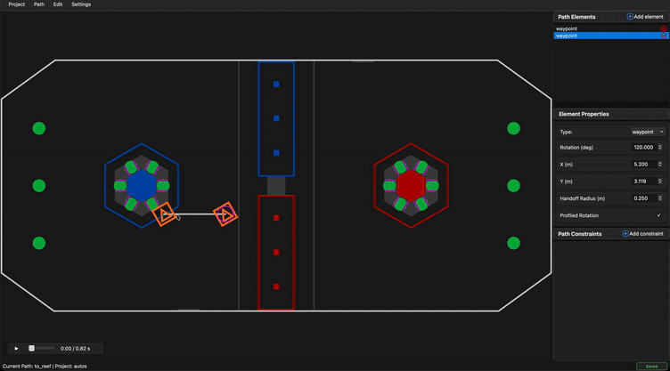

Canvas¶
The canvas is the main visual workspace where you design your paths. It displays the FRC field with your path overlaid, allowing direct manipulation of path elements.
Navigation¶
Zooming¶
Use the scroll wheel to zoom in and out of the canvas.

Panning¶
Click and drag on empty space (not on an element) to pan the view around the field.

Selecting Elements¶
Click on any element to select it. The selected element will be highlighted, and its properties will appear in the sidebar.
Moving Elements¶
Drag translation elements (Waypoints and TranslationTargets) to reposition them on the field.

Tip
The element's coordinates update in real-time in the sidebar as you drag.
Adjusting Rotation¶
Waypoints and RotationTargets have rotation handles—small circles extending from the element that indicate the rotation direction.
Drag the rotation handle to adjust the element's rotation.

Moving Rotation Targets¶
RotationTargets exist along the path segment between two anchor points. Drag a RotationTarget along its connecting line to adjust its t_ratio (position along the segment).

Deleting Elements¶
Select an element and press Delete or Backspace to remove it from the path.
Alternatively, use the ✕ button in the sidebar's element list.
Element Visualization¶
Color Coding¶
| Element | Appearance |
|---|---|
| Waypoint | Orange rectangle with rotation handle line |
| TranslationTarget | Blue circle |
| RotationTarget | Green dashed rectangle with rotation handle line |
Path Lines¶
Lines connect translation elements (Waypoints and TranslationTargets) showing the path the robot will follow. RotationTargets appear as markers along these lines.
Handoff Radius¶
Each translation element displays a magenta dashed circle representing its handoff radius. The robot advances to the next target when it enters this circle.

Constraint Visualization¶
When you click on a ranged constraint's slider in the sidebar, a green overlay highlights the affected path segments on the canvas. This helps you visualize exactly which parts of the path the constraint applies to.

Simulation View¶
During simulation playback, the canvas shows:
- Robot position moving along the path
- Orange trail showing the simulated trajectory
- Current rotation indicated by the robot icon orientation
See Simulation for more details on the simulation features.
Keyboard Shortcuts¶
| Shortcut | Action |
|---|---|
Delete / Backspace |
Delete selected element |
Space |
Play/pause simulation |
Ctrl+Z / Cmd+Z |
Undo |
Ctrl+Y / Cmd+Shift+Z |
Redo |
Ctrl+S / Cmd+S |
Save |